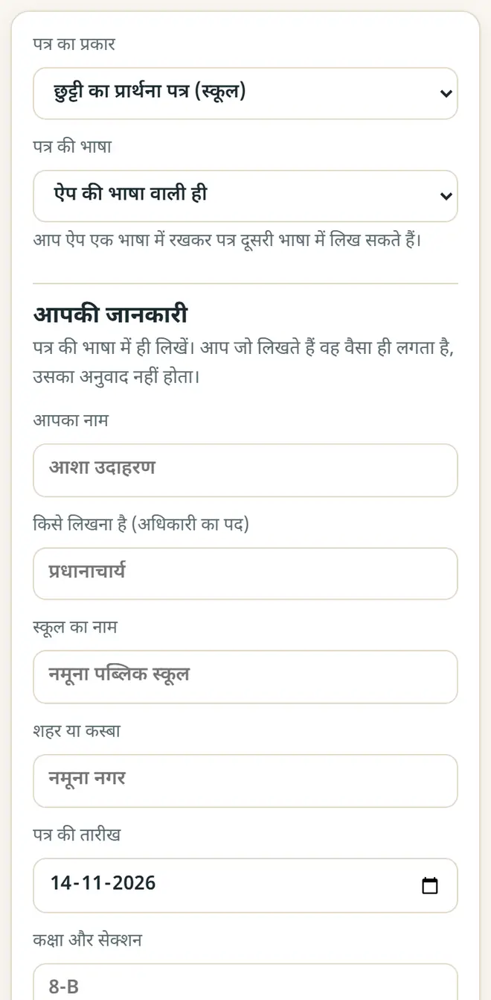
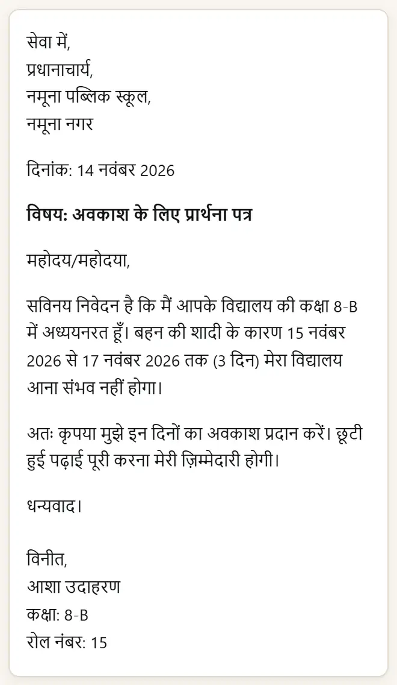

छुट्टी के प्रार्थना पत्र का फ़ॉर्मेट: स्कूल, ऑफ़िस और बीमारी की छुट्टी
छुट्टी के प्रार्थना पत्र का एक तय ढाँचा होता है: किसे लिखना है, विषय, तारीख़ें, कारण और आपका नाम। यह मुफ़्त ऐप इन हिस्सों को हिंदी, अंग्रेज़ी या 12 में से किसी भी भाषा में सही क्रम में लगा देता है। आपको बस अपनी जानकारी लिखनी है।
छोटा जवाब
आवेदन और पत्र लेखक खोलें और “पत्र का प्रकार” में से चुनें: “छुट्टी का प्रार्थना पत्र (स्कूल)”, “छुट्टी का प्रार्थना पत्र (कॉलेज)”, “छुट्टी का आवेदन (दफ़्तर)” या “बीमारी की छुट्टी”। अपना नाम, स्कूल या ऑफ़िस का नाम, तारीख़ें और कुछ शब्दों में कारण लिखें। पत्र एक बार पढ़ें, फिर “कॉपी करें” या “प्रिंट करें या PDF सेव करें” दबाएँ।
5 स्टेप में छुट्टी का प्रार्थना पत्र
-
छुट्टी का प्रकार चुनें
आवेदन और पत्र लेखक खोलें। यह बनावटी जानकारी वाले एक नमूना पत्र के साथ खुलता है, ताकि आप फ़ॉर्मेट देख सकें। “पत्र का प्रकार” में “छुट्टी का प्रार्थना पत्र (स्कूल)”, “छुट्टी का प्रार्थना पत्र (कॉलेज)”, “छुट्टी का आवेदन (दफ़्तर)” या “बीमारी की छुट्टी” चुनें। फिर फ़ॉर्म में वही जानकारी दिखती है जो उस पत्र के लिए चाहिए।

पत्र का प्रकार चुनें और थोड़ी जानकारी भरें। -
पत्र की भाषा चुनें
“पत्र की भाषा” में हिंदी, अंग्रेज़ी या 12 में से कोई भी भाषा चुनें। ऐप आपकी अपनी भाषा में ही रह सकता है। अपनी जानकारी पत्र की भाषा में लिखें: आप जो लिखते हैं वह वैसा ही लगता है, उसका अनुवाद नहीं होता।
-
अपनी जानकारी भरें
अपना नाम, जिन्हें पत्र लिखना है उनका पद (जैसे प्रधानाचार्य या मैनेजर), स्कूल या ऑफ़िस का नाम और अपना शहर लिखें। विद्यार्थी अपनी कक्षा और रोल नंबर लिखें, और कर्मचारी अपना पद।
-
तारीख़ें और कारण लिखें
“छुट्टी कब से” और “छुट्टी कब तक” में तारीख़ें चुनें: पत्र दिन अपने-आप गिन लेता है। कारण कुछ आसान शब्दों में लिखें, जैसे बुख़ार या बहन की शादी। वह वाक्य में अपने-आप बैठ जाता है। कारण हमेशा सच्चा लिखें।
-
पढ़ें, फिर कॉपी या प्रिंट करें
पत्र एक बार पढ़ लें। “कॉपी करें” दबाकर उसे WhatsApp या ईमेल में पेस्ट करें; वहाँ आप कोई भी शब्द बदल सकते हैं। काग़ज़ पर या PDF में चाहिए तो “प्रिंट करें या PDF सेव करें” दबाएँ (प्रिंट विंडो में Save as PDF चुनें), और टेक्स्ट फ़ाइल के लिए “टेक्स्ट फ़ाइल डाउनलोड करें”।

तैयार प्रार्थना पत्र, कॉपी या प्रिंट करने के लिए।
अच्छे प्रार्थना पत्र में क्या होता है
- इसके हिस्से: किसे लिखा है, तारीख़, विषय, संबोधन, तारीख़ों के साथ कारण, धन्यवाद की एक लाइन, और आपका नाम, साथ में कक्षा और रोल नंबर या आपका पद।
- पत्र छोटा रखें। दो छोटे पैराग्राफ़ काफ़ी हैं: छुट्टी क्यों चाहिए, किन तारीख़ों के लिए, और विनम्र निवेदन।
- पत्र में ________ जैसी लाइन का मतलब है कि वह जानकारी ख़ाली है। उसे फ़ॉर्म में भरें, या पत्र प्रिंट करके पेन से लिख दें। चाहें तो अपना मोबाइल नंबर भी जोड़ सकते हैं।
- छुट्टी के नियम हर स्कूल और ऑफ़िस में अलग होते हैं। कहीं अभिभावक के हस्ताक्षर चाहिए, कहीं डॉक्टर का सर्टिफ़िकेट। इसलिए अपने क्लास टीचर या ऑफ़िस से पूछ लें कि उन्हें क्या चाहिए।
नए मुफ़्त टूल और हिंदी में AI के पाठ पाएँ
हमारी ईमेल लिस्ट से जुड़ें: नए मुफ़्त ऐप, नई गाइड और AI पर हिंदी वीडियो पाठ की जानकारी आपको मिलती रहेगी। कोई स्पैम नहीं।
सिर्फ़ वयस्कों (18+) के लिए। आप कभी भी नाम हटवा सकते हैं।
हम ये टूल क्यों सुझाते हैं
- सबके लिए मुफ़्त: न विज्ञापन, न साइन-अप, न कोई पेड प्लान।
- प्राइवेट: आपकी फ़ाइलें और जानकारी आपके अपने डिवाइस पर ही रहती हैं।
- फ़ोन, लैपटॉप या स्मार्टबोर्ड पर चलते हैं, और एक बार खुलने के बाद बिना इंटरनेट भी।
- हिंदी समेत 12 भाषाओं में।
वीडियो से सीखना पसंद है? हमारे YouTube चैनल पर AI और मुफ़्त टूल्स के हिंदी पाठ देखें।
अक्सर पूछे जाने वाले सवाल
स्कूल के लिए छुट्टी का प्रार्थना पत्र कैसे लिखें?
पत्र प्रधानाचार्य या क्लास टीचर के नाम लिखें, विषय लिखें, एक-दो वाक्यों में कारण और तारीख़ें बताएँ, और आख़िर में अपना नाम, कक्षा और रोल नंबर लिखें। ऐप में “छुट्टी का प्रार्थना पत्र (स्कूल)” चुनें और यही जानकारी भर दें।
क्या प्रार्थना पत्र हिंदी में मिल सकता है?
हाँ। “पत्र की भाषा” में हिंदी चुनें और अपनी जानकारी हिंदी में लिखें। पत्र अंग्रेज़ी, बांग्ला, मराठी, गुजराती, पंजाबी, ओड़िया, तमिल, तेलुगु, कन्नड़, मलयालम और उर्दू में भी तैयार मिलता है।
बीमारी की छुट्टी का आवेदन कैसे लिखें?
“बीमारी की छुट्टी” चुनें, बीमारी एक-दो शब्दों में लिखें, जैसे बुख़ार, और तारीख़ें चुनें। पत्र में लिखा आता है कि आपकी तबीयत ठीक नहीं है और उन दिनों की छुट्टी चाहिए। बीमार विद्यार्थी के लिए “छुट्टी का प्रार्थना पत्र (स्कूल)” चुनें और कारण में बीमारी लिखें।
क्या प्रार्थना पत्र WhatsApp या ईमेल पर भेज सकते हैं?
हाँ। “कॉपी करें” दबाएँ और पत्र WhatsApp या ईमेल में पेस्ट कर दें। अगर स्कूल या ऑफ़िस को काग़ज़ पर चाहिए, तो “प्रिंट करें या PDF सेव करें” दबाएँ और हाथ से हस्ताक्षर करें।
क्या यह मुफ़्त है? मेरी जानकारी कहीं सेव होती है?
यह मुफ़्त है और साइन-अप नहीं चाहिए। आपकी जानकारी इसी ब्राउज़र में, आपके अपने डिवाइस पर रहती है; कुछ भी अपलोड नहीं होता। “मेरी जानकारी मिटाएँ” से वह हट जाती है।
काम की लगी?
इसे किसी दोस्त, साथियों या अपने स्कूल के WhatsApp ग्रुप में भेजें।